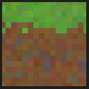

Wähle eine lokal gespeicherte Minecraft-Welt, verbinde deinen Server und lade sie hoch – die App zeigt vorher, ob die Welt zur Serverversion passt.
.minecraft/saves – mit Icon, Version, Spielmodus, Größe und letztem Spiel.server.properties.level-name eingetragen.Verglichen werden das Weltformat (DataVersion aus der level.dat) und die Version des Servers. Welten, die neuer sind als der Server, werden gesperrt; ältere werden als „wird aktualisiert“ markiert.
Online-Status, Antwortzeit, Version, Spielerzahl, MOTD sowie Spielmodus, Schwierigkeit, Sichtweite und Whitelist aus der server.properties.
Zugang per Passwort oder SSH-Schlüssel. Läuft der Server auf demselben Rechner, genügt ein Ordner.
Passwörter werden mit dem Schlüsselbund des Betriebssystems verschlüsselt gespeichert. Der Upload überschreibt nie eine vorhandene Welt auf dem Server.
src/lib/versions.js ergänzt werden.